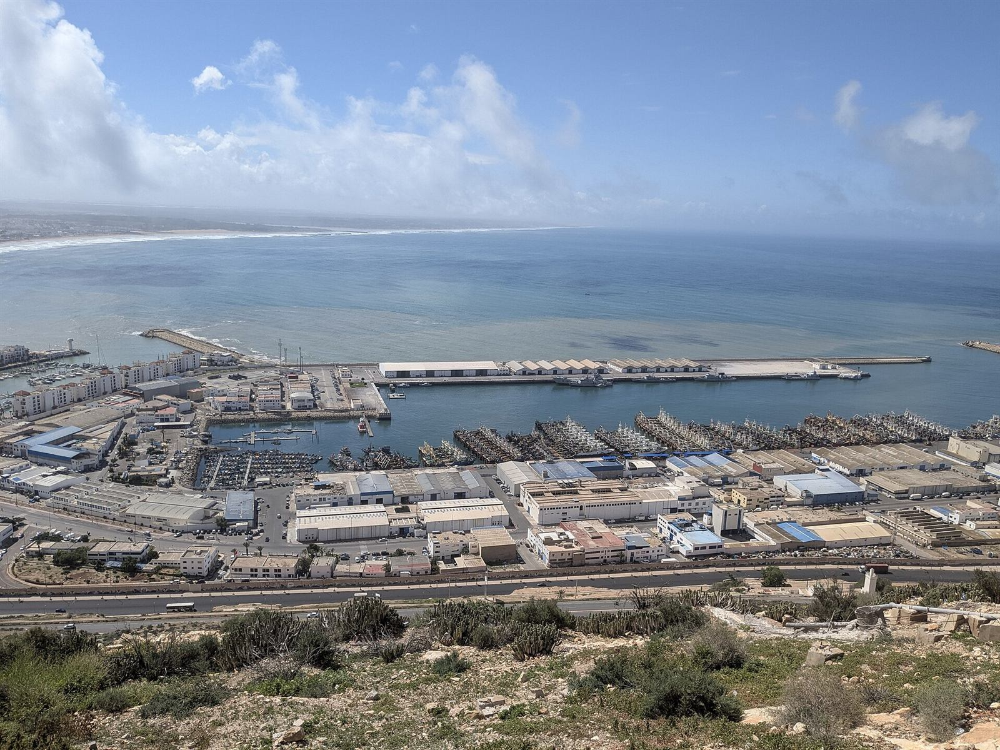

Vérification des matricules conteneurs
Un outil interne qui automatise la vérification des matricules de conteneurs.
- Problème
- Contrôler chaque matricule à la main prend du temps et laisse passer des erreurs.
- Solution
- Une vérification automatique, intégrée au travail de l'équipe.
Capture à venir, avec les données sensibles floutées. Photo : port d'Agadir, Abdeaitali, CC BY-SA 4.0.
Essayer la règle de contrôle